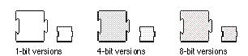
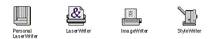

|
Extension IconsExtensions are software that add a feature or capability to the operating system. An extension icon looks like a puzzle piece. Figure 8-41 shows the default icons that appear in the Finder if you don't supply a custom icon for your extension.Figure 8-41 Default extension icons  You can customize an extension icon by adding a graphic to the puzzle piece. You can display the puzzle piece in a horizontal or a vertical orientation with the protruding part facing any direction. One exception to the standard form for extension icons
are icons that represent Chooser extensions. Chooser
extensions appear in the Chooser Figure 8-42 Examples of Chooser icons  |